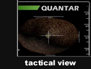
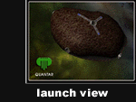
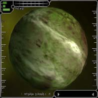
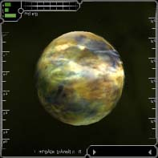
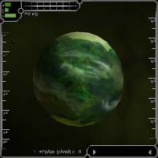

Quantar Societal Overview
Quantar in a nutshell is a highly advanced hunter-gatherer tribal culture. Quantar pilots are religious zealots, ingrained with deep spiritual beliefs in relationships to the Great Cosmos, Nature, and Matter. From a very early age until the day they die, Quantar mine the raw resources of space for use in their religion, art, and science, which is one in the same and also referred to as "Quantar".
Quantar vehicles are sleek and well crafted, and closely blend natural form with technological function. This emphasis on design and efficiency often results in increased top speeds, making Quantar ships faster on average than their Solrain and Octavian counterparts. Although advanced weapons are readily available, most ship designs allow little room for bulky weaponry. The Third Book of Hamalzah, part of the Quantar religious doctrine, states,
What weapon do I require? For behold, I am the Lion... I am the weapon.
... a philosophy Quantar pilots live and die by.


The Quantar are highly protective of the territory they inhabit, which is held as sacred space to them. They control access to a multitude of mineral products, and the majority of the Great Venure Belt, lying between Quantar and Hyperial. Quantar established control in these areas during the GVB Wars with Hyperial, referred to by Quantar as Jihad al Din (or Faith Wars). Although the war for the Great Venure Belt is officially over, there are still scattered reports of wanton Hyperial terrorism in the area. It is even rumored that captured Quantar are dissected and sold as spare body parts on various stations in Hyperial.
Rank Matrix
To the Quantar, mining resources is more than a source of income; it is a way of life and an entire belief system. In fact, every Quantar ship is manufactured with a Bussard Mining Scoop for increased mining productivity. This device, through the use of electromagnetic particulate collection fields, increases the efficiency and speed of mining. Of course, this device is only useful when used in conjunction with a mining laser. Although mining, trading, and fighting for honor are essential to a Quantar's status, loyal teamwork and selflessness are the religious keys to ascension.
|
Quantar System Overview
The Quantar System is located between Amananth and Hyperial, and consists of approximately 30 sectors. At present the Quantar have built 3 space stations - Quantar Core Station, TriPoint Station, and The Corridor Station. These stations are located near the dominant planets of the Quantar System - Quanus, Perasca, and Kapenja.
|

Quantar Core: Quanus
Population: 8,000,000,000
Capital City: Petrios
Cities of note: Admantar, Khalar Fa'el, Quezos
Corporations: Aristo, Annihilitech, Lexxor, Venurian Prospecting, Cromforge
Quanus is the dominant planet of the Quantar System, and the seat of the "Fa'hil Memta", the Quantar government. Just as their space-bound brethren, the inhabitants of the planets are primarily miners. Quanus is rich in precious stones and minerals that also represent their primary export articles. Like all citizens of the Quantar Systems, the Quani refuse to wear such adornments themselves.
|

Corridor: Perasca
Population: 4,300,000,000
Capital City: Jenos
Cities of note: Zravion, Bankalla, Sa'ing Matar, Puunjah
Corporations: Aristo, Annihilitech, Lexxor, Venurian Prospecting, Cromforge
Perasca is the smallest planet in the Quantar System. The presence of the administrative headquarters of the Venurian Prospecting Ltd. in Jenos gives its inhabitants a reprieve from mining. The Jenos School of Mines is well known for its geological department.
|

Tripoint: Kapenja
Population: 5,500,000,000
Capital City: Kapenja
Cities of Note: Quelos, Xerxos, Fakar
Corporations: Aristo, Annihilitech, Lexxor, Venurian Prospecting, Cromforge
Kapenja is rich in fossil fuels and carbonized rock, making it the main provider of refined fuels. Therefore, refineries and purification facilities dominate the Kapenjian landscape. Kapenja is also believed to be the birthplace of the famed Quantar hero Amraza.
|
Quantar Political Overview
Governmental Structure: : Qua' it tahir (Will of the People)
Capital Planet: Quanus
Quantar government is unique in as far as a "Tahir " is appointed by its inhabitants, remains in this position for life, and appoints his colleagues. The Tahir must publicly announce all major governmental decisions to the citizenry. If only a single person rejects it, it will not be put into action - although this never seems to happen. Usually the citizens just replace the Tahir upon his/her death with a member of his own family. As a result Quantar government has been in the hands of the Neamru family for several centuries.
Personnel Profile
Primary Political Leaders:
Tahir: Queliar Neamru (m)
2nd Tahir: Penjia Neamru (f)
3rd Tahir: Sandokhan Neamru (m)
Speakers:
Jarwahaal (m)
Meniokee (f)
Station Governors:
Quantar Core: Delphia Neamru(f)
Corridor: Sathama Randi (m)
Tripoint: Queliar Neamru II. (m)
|